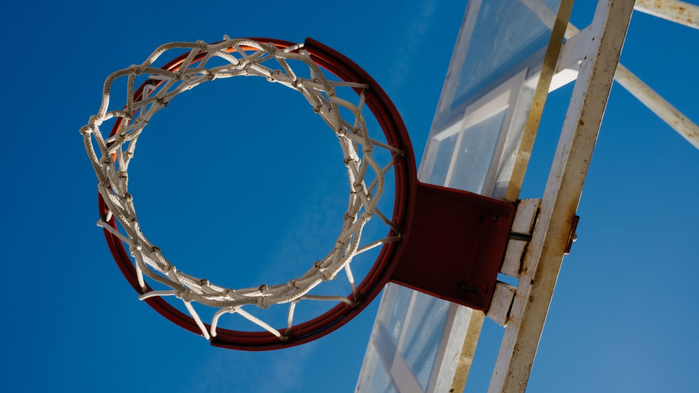

日本のバスケが「カルチャー」になる日
体育館の匂い、キュッと鳴るシューズ、放課後のリング。日本のバスケは長く「部活のスポーツ」だった。その景色が、いま音を立てて変わりつつある。

漫画が耕し、リーグが芽を出した
この国のバスケ人気の土台を耕したのは、間違いなく漫画だ。『SLAM DUNK』が描いた湘北の物語は世代を超えて読み継がれ、劇場版のヒットは親子二世代を体育館ではなく映画館に並ばせた。物語が先にあって、競技が後から追いかけてくる。日本のバスケは、最初からカルチャーとして受容されてきたとも言える。
2016年に開幕したBリーグは、その土壌に立てられた舞台だ。演出、グッズ、アリーナグルメ。「試合を観る」だけでなく「週末を過ごす」場所としてアリーナを設計する流れが生まれ、クラブは地域の看板になりつつある。
海の向こうと、地元の公園と
2019年に八村塁がドラフト1巡目でNBA入りし、2023年には沖縄でワールドカップが開催され、日本代表は自力でパリ五輪への切符を掴んだ。日本人選手がNBAの舞台に挑むニュースは、もう「事件」ではなく「続報」になった。
けれど、カルチャーの本体はテレビの中ではない。公園のリングに集まる子どもたち、ストリートボールの大会、バッシュを普段着に合わせる高校生。バスケが「観るもの」から「暮らしの一部」になったとき、この国のバスケは本当の意味でカルチャーになる。僕たちは、その現場を記録していきたい。